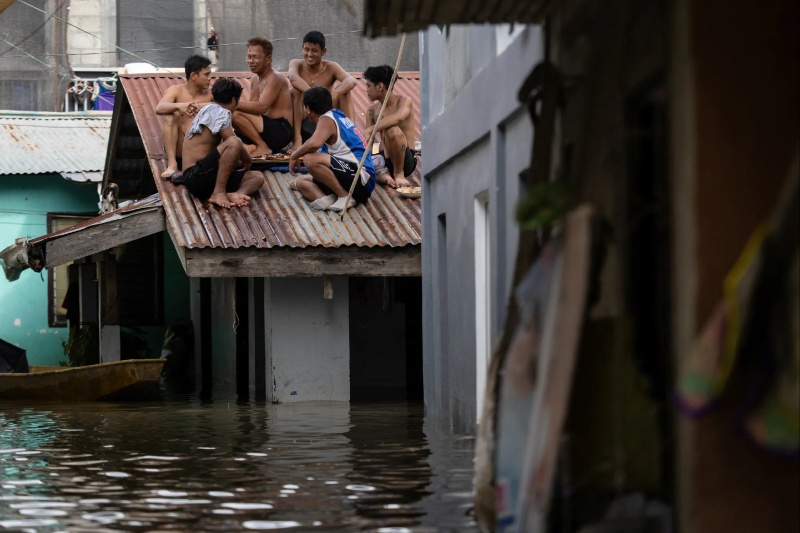

From The Eyes of The Affected
BULACAN, Philippines - Within the riverside village of Sipat, Josephine Dela Cruz watches as the soil beneath her home moves with every storm that visits, fearing that a day may come where it will all wash away, including her and her family.
This summer, rains have become more aggressive and has destroyed a variety of bamboo houses in their residence along the Angat River in Plaridel, Bulacan - a province which is known to be vulnerable against constant floods. Albeit the government’s actions in providing better protection and flood control, many residents from within the area are still considered to be unsafe.
Over the last three years, the Philippine government has spent more than 500 billion pesos to build flood prevention infrastructure yet investigations have exposed that there are issues that revolve around incomplete structures, overpricing of contracts have all taken place within these projects and it surely states a major issue.
Residents who live near the river for a long period of time have reported that it is so disappointing seeing a bunch of money get allocated for flood prevention yet protection is yet to be resolved. Whenever the Angat Dam releases water to stop overflowing from happening, the entire community is put at risk due to riverbank erosion.
As a response to the public outcry due to the clear mismanagement, President Ferdinand Marcos Jr. has established a commission in September to locate all the potential corruption-embedded projects. This move is followed by a set of protests that took place on September 21, when thousands of Filipinos have come together with the same vision and marchds in Manila to get the accountability they ask for.
Despite all the money focused on flood control mitigation ranging roughly 1.47 trillion pesos over the past 15 years, studies have shown that flooding has had a worse trend in many areas, along communities on the frontlines against climate change going through increasingly consistent and aggressive floods.